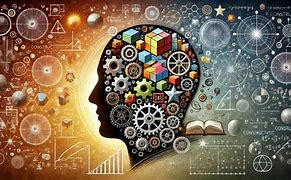

CONSTRUCTIVISMO
El constructivismo es una teoría del aprendizaje que sostiene que el conocimiento
no se transmite, sino que se construye activamente por cada individuo, a partir de sus experiencias
previas, interacciones sociales y reflexiones personales.
Principios básicos del constructivismo:
- 1.El alumno es protagonista: El aprendizaje ocurre cuando el estudiante participa activamente.
- 2.Conocimiento previo: Se parte de lo que el estudiante ya sabe (como también señala Ausubel)
- 3.Construcción activa: El conocimiento se construye, no se recibe pasivamente.
- 4.Contexto social y cultural: Aprendemos en interacción con otros y en un entorno determinado.
- 5.Aprendizaje como proceso: Importa más el camino que el simple resultado.
Tipos de constructivismo
- 1.Cognitivo (Piaget, Bruner, Ausubel): El conocimiento se construye internamente.
- 2.Sociocultural (Vygotsky): El conocimiento se construye en interacción con el entorno social.
Conclusión
El constructivismo transforma la educación al poner al estudiante en el centro del proceso de aprendizaje.
En lugar de recibir pasivamente conocimientos, el alumno los construye activamente, apoyado en sus experiencias previas,
el contexto social y la interacción con otros.
Esta perspectiva promueve una educación más crítica, reflexiva y significativa, preparando a los
estudiantes para enfrentar problemas reales y aprender de manera autónoma.
|  |
VER MAS